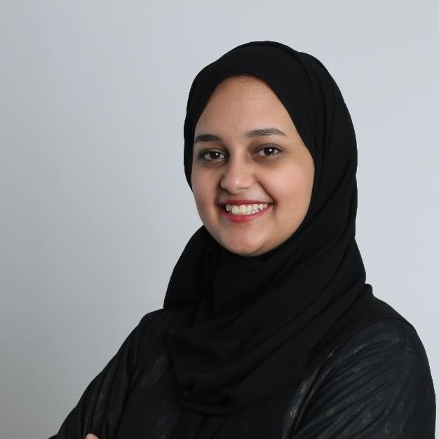

- Graduate
- Applied Linguistics

Dima is an alumna of PSU, holding a degree in Applied Linguistics. As a co-founder of PSUMUN, she felt very passionately about providing the local scene with the best possible conference. Since graduating, Dima has been pursuing a career in education and hopes to bring the discipline MUN taught her to her students. In her free time, Dima enjoys writing and landscape photography.
Farooq is a senior finance student in Prince Sultan University, Saudi Arabia. He is a Dual Citizen of France and the UK but he is originally from Syria. Being an avid traveler, Farooq has done exchange programs and competitions all over the world, including the US, Malaysia, and even Czech for PragueMUN 2019, which was his first! During his free time you will find him building PCs or wasting unfathomable hours on TV Shows and Anime.
Wardah’s journey to “Director General” was one filled with passion and dedication. Despite the vicissitudes of her academic life, one thing has stayed constant: her appetite for discussion, diplomacy, and debate. Since the advent of her university career, MUN has grown into an insatiable craving. With every conference, she has captured unforgettable memories, and as such, her love for MUN only increases. Outside of MUN, Wardah can be caught quoting Machiavelli, trying her best to osmose her study notes, staring at spaghetti code, convincing herself that she has a sense of direction, and curling up with a good book in her lap. Wardah looks forward to a conference filled with riveting debate and discussion, and she hopes to create an exceptional experience for all at PSUMUN 2020.

Fatema Amodi is currently a PSU Alumni that graduated with a Bachelor in Applied Linguistics. Fatema is a student that had her fair share in different fields, ranging from business, linguistics, and politics. Her MUN journey started in 2019 when she enrolled in her first conference at an expert committee along with the PSU delegation in PragueMUN2019. She soon fell in love with the idea and contributed as a founder of the PSUMUN Society. She has since participated in various MUNs as a Delegate, Chair, Conference Director, Crisis Director, Secretariat, and a Founder. Apart from her interest in diplomacy, Fatema enjoys exploring philosophy, music, and makeup during her leisure time.
Khadija is a senior Applied Linguistics student at Prince Sultan University and PSUMUN’s former Undersecretary of Conference Management. More popularly known as ‘the English’ - particularly when someone wants something written, edited, or proofread - her love for politics and debate, as well as her aptitude for organization, served her well in her role. When not proofreading, editing or organizing things, Khadija can generally be found writing travel pieces for magazines, reading anything with words, or going on banana pudding dates with her best friend.

Currently interning at McKinsey & Company, Mohammed Al Hoshan is a Production and Manufacturing Engineering graduate from Prince Sultan University. More commonly known as Hoshan - or sometimes, the Prince - Mohammed has taken part in various MUNs during his time at university, both locally and internationally. In addition to participating in MUNs, he also occupied a role as PSUMUN’s Under Secretary of Logistics in 2019. In his free time, Hoshan can be found socializing with his friends over some Arabic coffee and going for long walks at night.